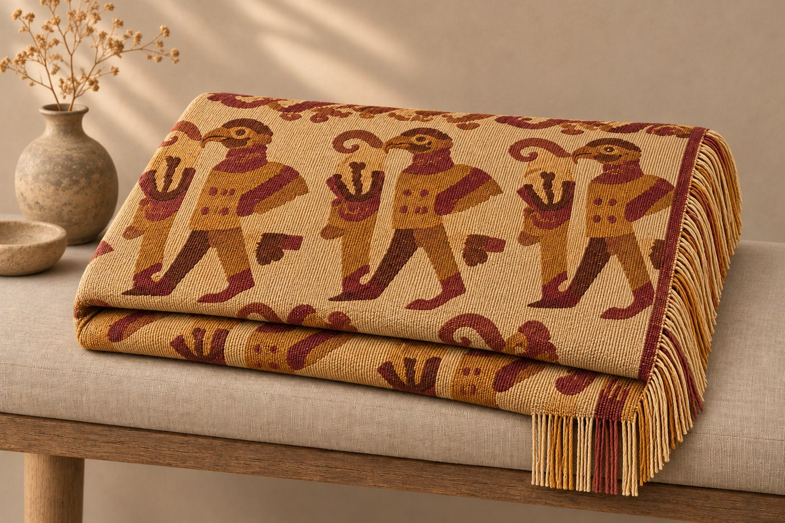
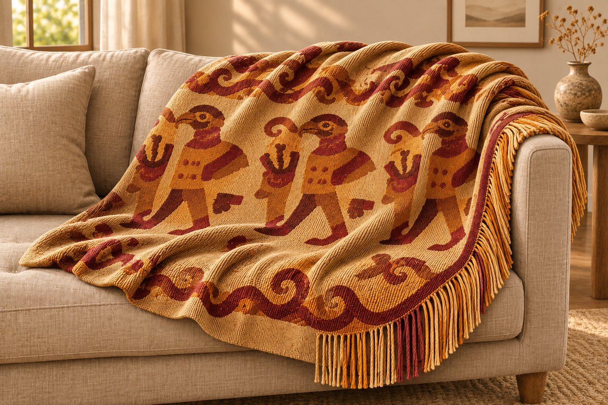
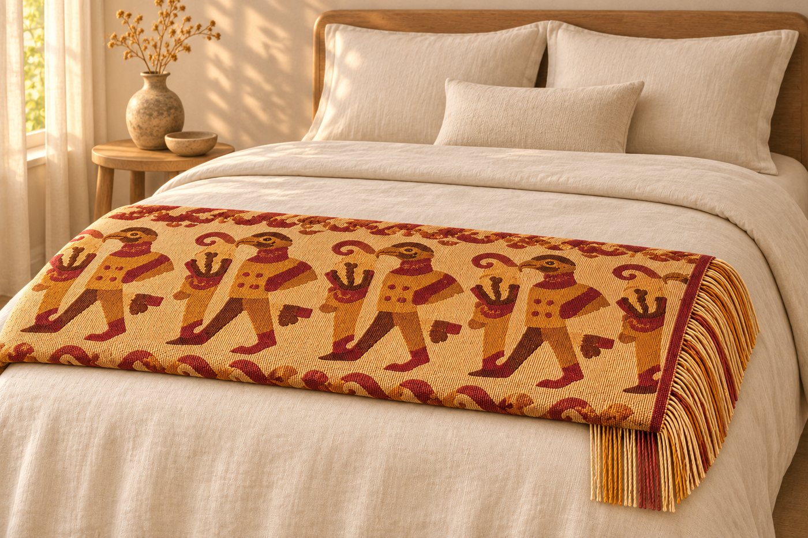
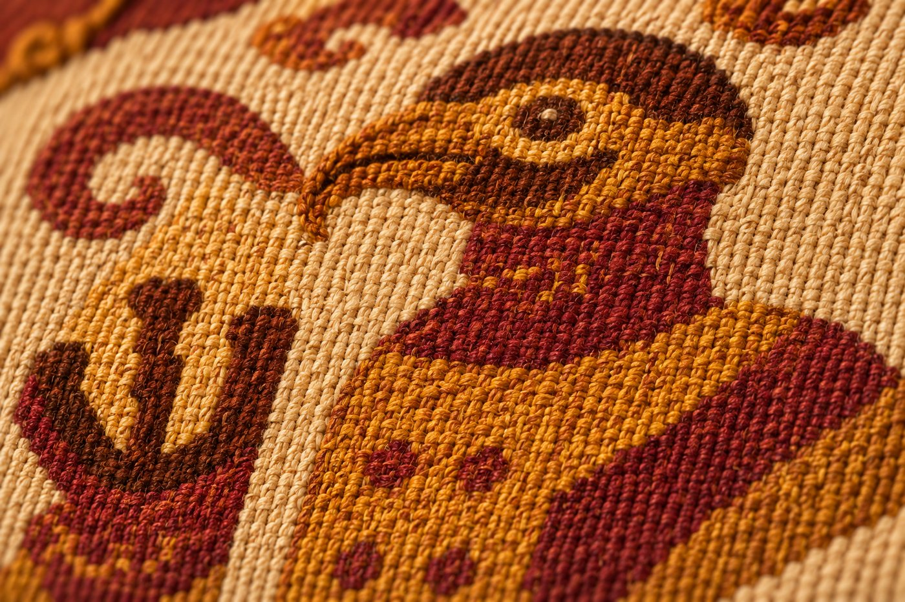
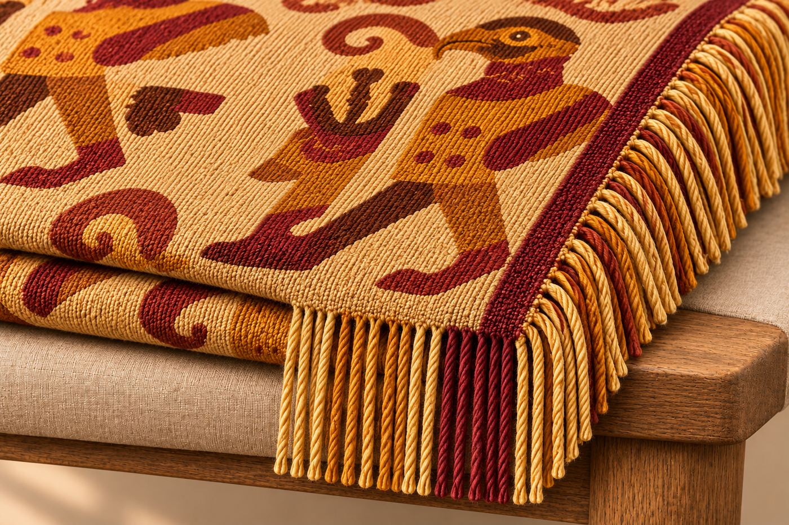
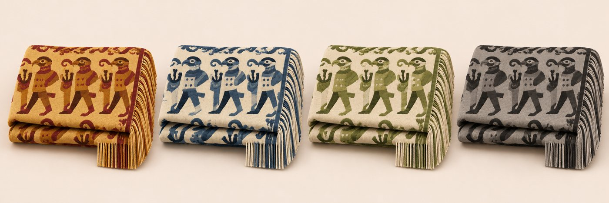

Design Brief
Blanket
Design brief, style and mood · 2026-11-28
A woven throw in a jacquard-like figure: stylized birds in mustard gold, rust and burgundy, closed with a twisted fringe. Warm, grounded and storied. The brief sets the look and mood through six views, from hero and use to weave, edge and colorways; size, fiber and construction are left to product development.


(01) Hero: folded throw on a linen bench, three-quarter view.

(02) In use: draped over a sofa arm and seat.

(03) In use: folded across the foot of a bed.

(04) Material detail: macro of the woven figure and yarn texture.

(05) Edge: burgundy selvage band and twisted fringe.

(06) Colorways: the original and three alternates.Overview
A woven throw blanket in a jacquard-like figure: a procession of stylized birds in mustard gold, rust and burgundy on a warm straw ground, finished with a twisted fringe at the ends. Folded it reads as a stack of repeating figures; opened it reads as one calm field. (01)
Mood
Warm, grounded and storied. Heirloom craft in a calm modern room: a textile that looks collected rather than bought, with the quiet confidence of an old tapestry cleaned of wear and damage. (01, 02)
Style direction
- Figure
- flat, stylized birds in a steady stride, repeated in rows; curl and scroll motifs fill the borders.
- Balance
- the pattern carries the object; everything around it (sofa, bed, bench) stays plain linen and wood.
- Border
- a darker band at the edge frames the field and leads into the fringe.
- Condition
- clean and even, with no wear, fading or damage.
Color and finish
Read from the images, not measured or matched to a color standard.
| Part | Color | Finish |
|---|---|---|
| Ground | Warm straw, light gold | Dense, flat, slightly nubby weave |
| Figures | Mustard, rust, deep burgundy | Matte, yarn-dyed look |
| Edge band | Dark burgundy | Tight, flat |
| Fringe | Gold, rust and burgundy twist | Soft, hand-twisted look |
Material and detail
The weave is judged up close: figures sit inside the cloth, not on it, with ground and figure yarns reading as one even surface. The look suggests a medium-weight wool or wool-blend yarn. (04)
Use and context
Lives over a sofa arm, across the foot of a bed or folded on a bench. Light enough to throw over the shoulders, rich enough to stay on display. (02, 03)
Pattern and repeat
The figure repeats in rows across the field with a scroll border at both ends. The repeat should read at a distance when the blanket is folded in thirds, and no figure should be cut through the body at a fold. Whether the design is symmetric or one-directional is open. (01, 03)
Edge and finish
A darker band and a twisted fringe close each end; the long sides are bound or selvaged. The fringe mixes the three figure colors so the edge belongs to the pattern. (05)
Hand, drape and care
The look calls for a soft, medium-weight hand that falls in natural folds and keeps the figure sharp when draped. Fiber, weight and care are for product development to settle. (02, 03)
Colorways
The original and three alternates that keep the figure and the fringe: indigo on cream, sage on ecru and charcoal on warm gray. (06)
Open to product development
- Final size, weight and fiber.
- Weave structure and how the figure is built into it; repeat size.
- Edge: fringe length and twist, binding or selvage.
- Colorway range, yarn colors and cost.
The brief fixes the look and mood; every detail above can change.
Credits and rights
AI-generated product looks made for this brief from a look image chosen by the designer (image model); looks, not a construction. The figure is an original reinterpretation; no source image appears on this page.